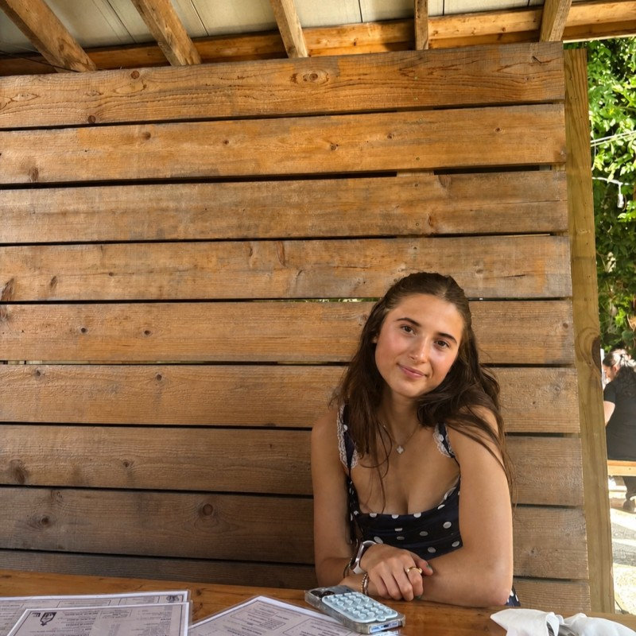
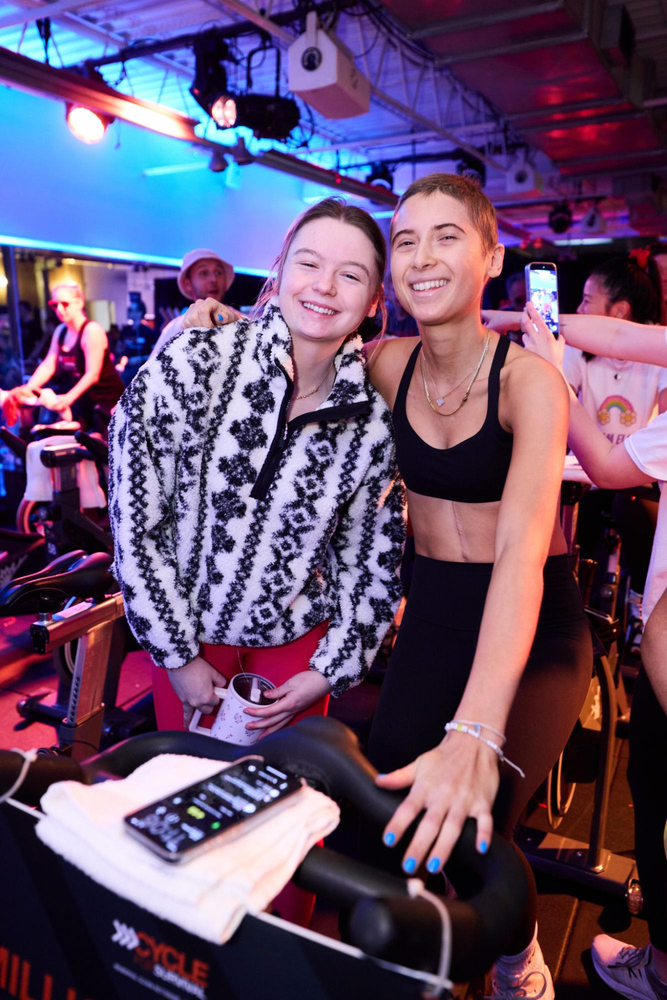

My story
Beating cancer, twice.
I'm Brynn, a student at Greenwich Country Day School from Darien, CT, and a two-time pediatric cancer survivor.
I know what the long days in a hospital room feel like. Now I spend my time making them easier for other kids: through handwritten cards, fundraising, speaking at galas, and building technology that keeps patients and families connected.
“I want to do everything I can to make the experience easier for the next patient.”

